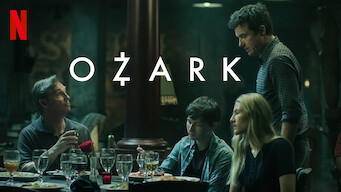

Ozark

Autores: Bill Dubuque, Chris Mundy, Mark Williams, Ryan Farley, MAIS
Emissora original: Netflix
Criador(es): Bill Dubuque; Mark Williams
Episódio final: 29 de abril de 2022
Gênero: Drama
2022 - 4 Temporadas HD
16 Anos: Drogas Ilícitas, Violência, Conteúdo sexual
História:
A trama segue a vida de Marty Byrde, um consultor financeiro, que, por circunstâncias extremas, inicia operações de lavagem de dinheiro para um cartel mexicano. Junto com sua família, Marty se muda para a região dos Lagos Ozark, onde desenvolve planos intrincados para lavar grandes quantias.
Autores: Bill Dubuque, Chris Mundy, Mark Williams, Ryan Farley, MAIS
Emissora original: Netflix
Criador(es): Bill Dubuque; Mark Williams
Episódio final: 29 de abril de 2022
Gênero: Drama